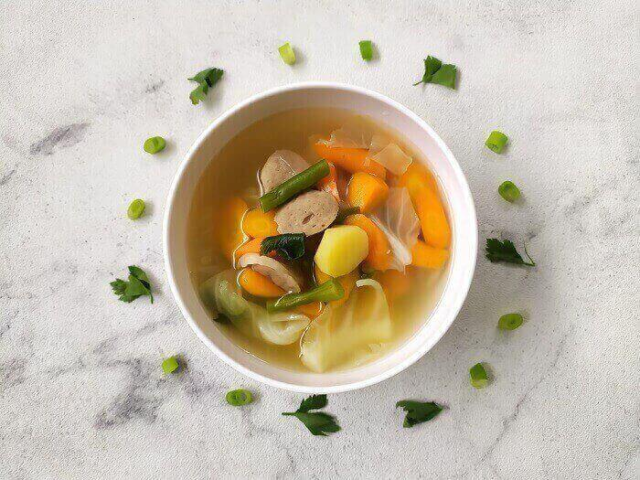
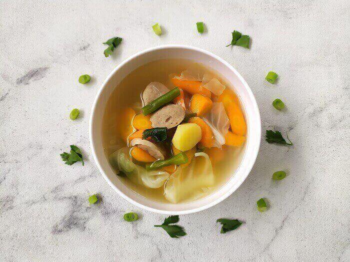
 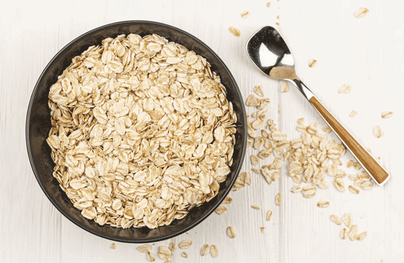
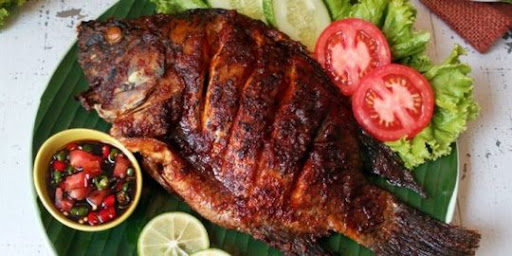
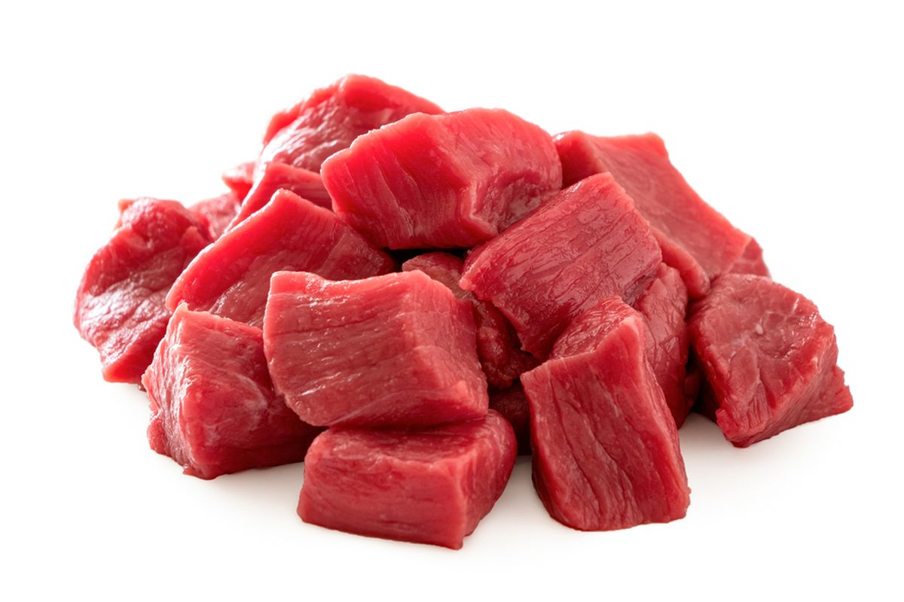
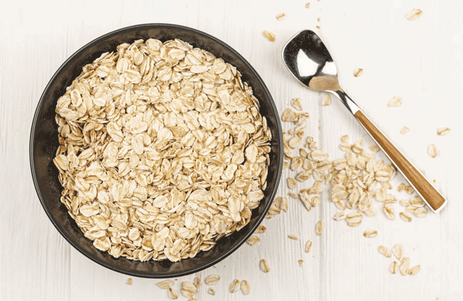
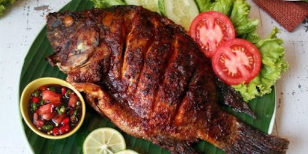
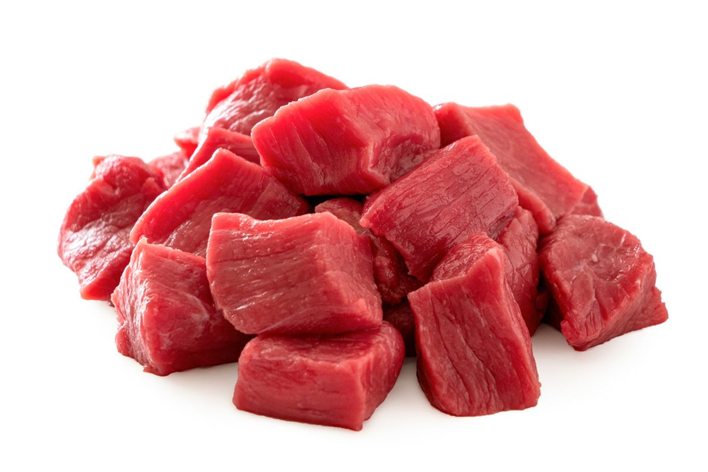
Menjalani puasa sehat merupakan hal yang penting. Pasalnya, puasa dengan cara yang sehat tidak hanya membuatmu lebih mampu menahan lapar dan dahaga saja, tetapi juga bisa memberikan sejumlah manfaat kesehatan secara maksimal.
Makan sahur adalah kunci agar kamu tetap berenergi sampai waktu berbuka puasa. Pastikan dalam menu sahur terdapat protein dan karbohidrat kompleks, yang bisa berasal dari telur, buah-buahan, sayuran, kacang-kacangan, beras merah, roti gandum, dan oatmeal. Selain itu, lengkapi menu makananmu dengan lemak sehat dari alpukat, ikan salmon, atau minyak zaitun, serta minum susu rendah lemak. Agar kebutuhan cairan tetap terpenuhi, konsumsilah makanan dengan kandungan air tinggi, seperti semangka, stroberi, dan blewah.
Kurang minum saat berbuka dan sahur bisa membuatmu jadi mudah lemas, bad mood, sakit kepala, migrain, hingga sembelit ketika berpuasa. Malahan, kamu juga bisa jadi batal puasa karena hal ini. Nah, untuk mencegahnya, pastikan kamu mencukupi asupan air mineral, ya. Rata-rata orang dewasa disarankan minum 2–3 liter atau lebih kurang 8 gelas air putih setiap hari. Minumlah air putih di waktu sahur dan berbuka.
Menu buka puasa juga perlu diperhatikan. Makan tiga kurma adalah cara tradisional dan sehat untuk memulai berbuka puasa. Kurma merupakan sumber serat yang mudah dicerna dan dapat membantu mengembalikan energi. Selain itu, setelah berbuka, kamu juga disarankan mengonsumsi makanan yang mengandung protein, vitamin, dan mineral, seperti daging ayam atau sapi, ikan, sayuran yang ditumis, telur, buncis, kacang polong, almond, dan nasi merah.
Hindari makan dengan kalap saat sahur atau berbuka. Pasalnya, makan dalam jumlah yang berlebihan justru dapat menyebabkan perut kembung, kelelahan, bahkan memicu kenaikan berat badan. Jadi, sebaiknya makanlah dalam porsi normalmu saja.
Puasa bukan alasan untuk malas bergerak. Kamu tetap dianjurkan rutin berolahraga agar tubuh tetap fit dan berenergi serta berat badanmu bisa terkontrol. Pilih jenis olahraga dengan intensitas rendah atau sedang, misalnya jalan kaki, yoga, atau bersepeda santai. Lakukan olahraga selama 30 menit setiap sore hari. Hindari berolahraga di siang hari karena bisa meningkatkan risiko dehidrasi.
Sebisa mungkin tidur dan bangun di waktu yang sama. Di waktu malam, tidurlah tidak kurang dari 4 jam dan kamu bisa tidur lagi setelah menyantap makan sahur, tetapi tunggu beberapa saat sampai perut tidak begah, ya. Selain itu, sempatkan juga waktu untuk tidur siang maksimal selama 20 menit.
Tetap terhubung dengan orang lain dapat membantu mengatasi stres, meningkatkan mood, dan menjaga kesehatan mental agar senantiasa dalam kondisi yang baik. Menjaga silaturahmi bisa lakukan dengan cara menjadwalkan waktu berbuka puasa bersama atau mengikuti kegiatan-kegiatan keagamaan.
Sumber lengkap disini
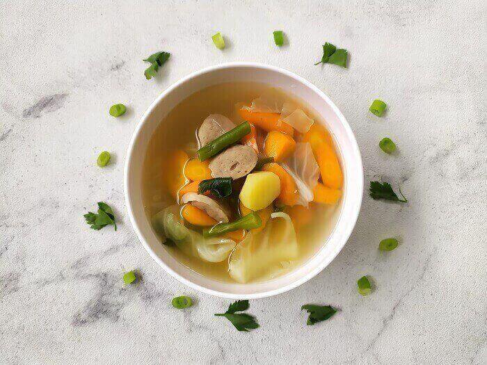
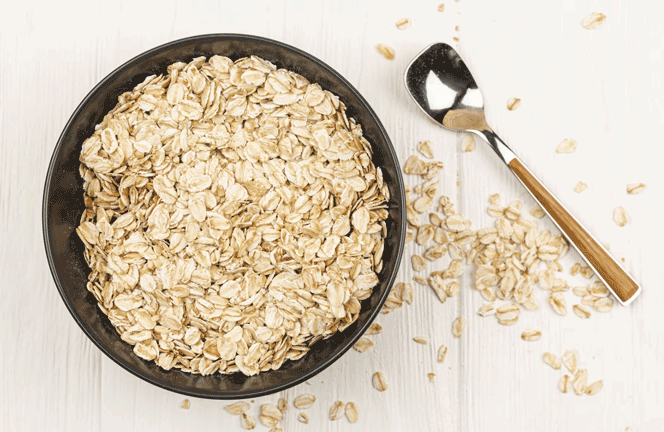
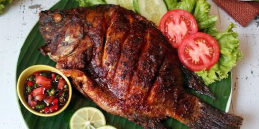
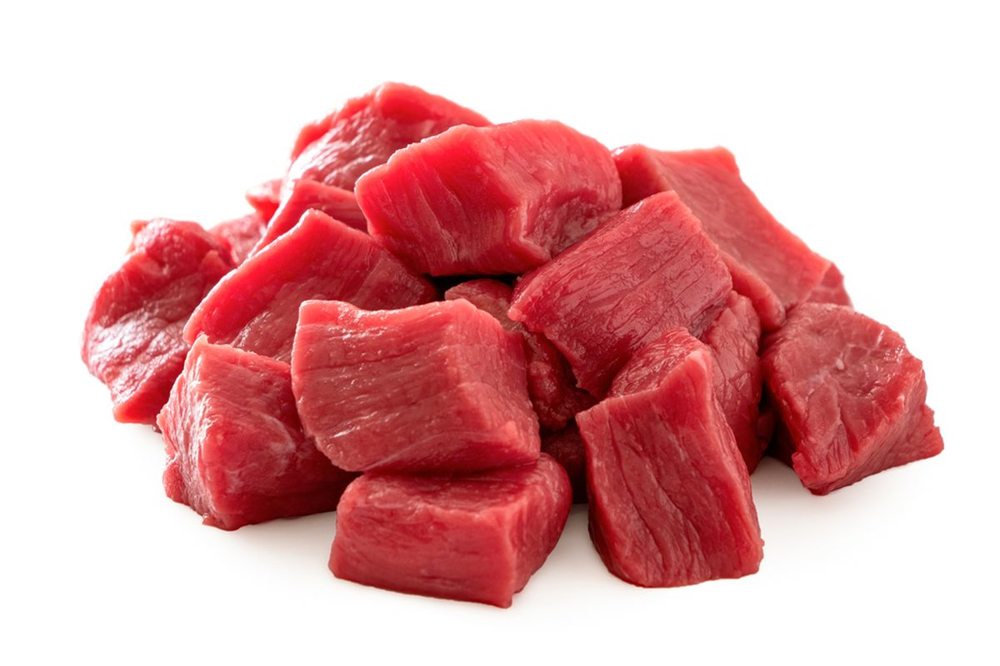
Sumber lengkap disini
Menahan lapar dan haus ternyata memicu pertumbuhan sel saraf baru di otak. Itu sebabnya, ini bisa membantu memperbaiki fungsi otak, termasuk melindungi otak dari risiko penyakit Alzheimer dan Parkinson. Melakukannya selama sebulan penuh juga bisa membentuk rute jaringan baru di otak sehingga membantu perkembangan biologis, psikologis, dan fungsional.
Berpuasa selama tiga hari atau lebih memicu proses regenerasi sistem kekebalan tubuh secara menyeluruh pada orang di segala usia. Puasa juga memicu sel-sel induk untuk memproduksi sel-sel darah putih baru sehingga berdampak pada meningkatnya daya tahan tubuh untuk melawan infeksi.
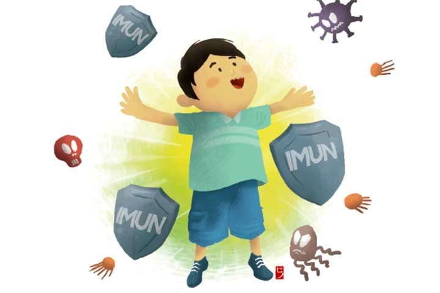Puasa merupakan ajang mengendalikan diri, termasuk dari pikiran, perasaan dan perilaku negatif. Setelah beberapa hari berpuasa, tubuh akan memproduksi lebih banyak endorfin. Ini adalah hormon yang berperan dalam mengurangi rasa sakit dan memicu perasaan senang, tenang, serta bahagia.
Puasa bisa merangsang peningkatan hormon pertumbuhan manusia (HGH). Ini karena HGH sangat efektif dalam mengatur metabolisme, membangun massa otot, membakar lemak, meningkatkan kekuatan otot, dan menurunkan berat badan tanpa kehilangan otot.
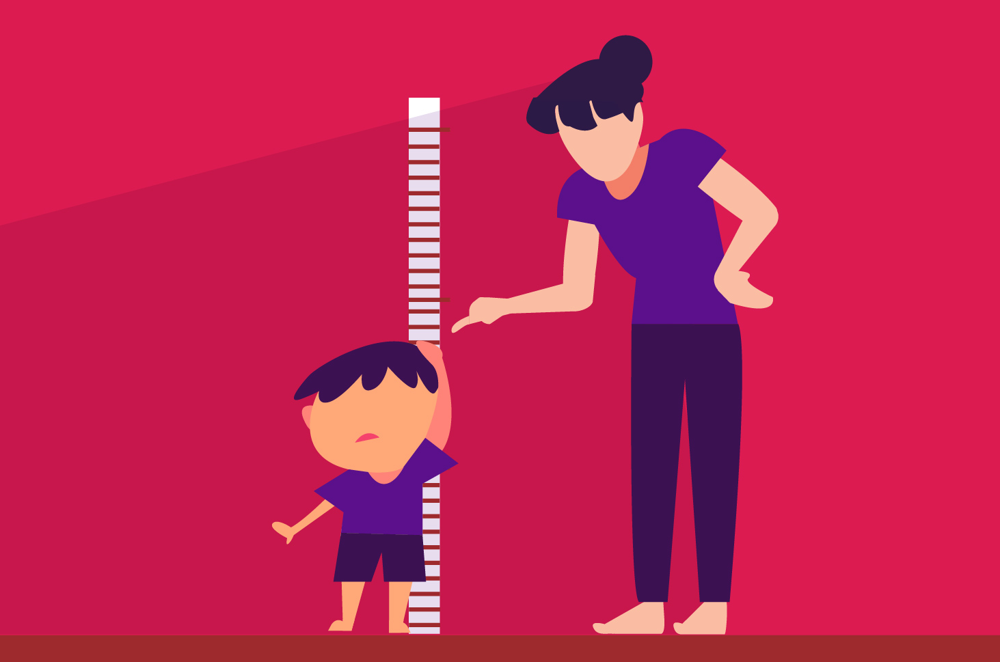Puasa efektif dalam menjaga kadar gula darah (glukosa) dan berat badan pada pengidap diabetes tipe-2. Selain diabetes, terlalu banyak konsumsi karbohidrat dan gula bisa membuat tubuh resisten terhadap insulin. Akibatnya, kamu lebih berisiko terkena penyakit kronis, termasuk penyakit jantung.
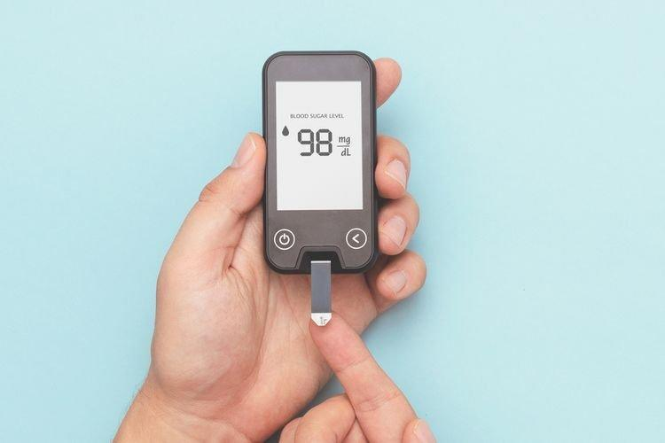Orang yang berpuasa secara teratur memiliki risiko penyakit jantung lebih rendah. Ini karena, puasa secara teratur membuat tubuh beradaptasi sehingga lemak akan dijadikan sebagai sumber energi utama bagi tubuh. Dampaknya, kolesterol di dalam tubuh akan berkurang dan mengurangi risiko penyakit jantung.
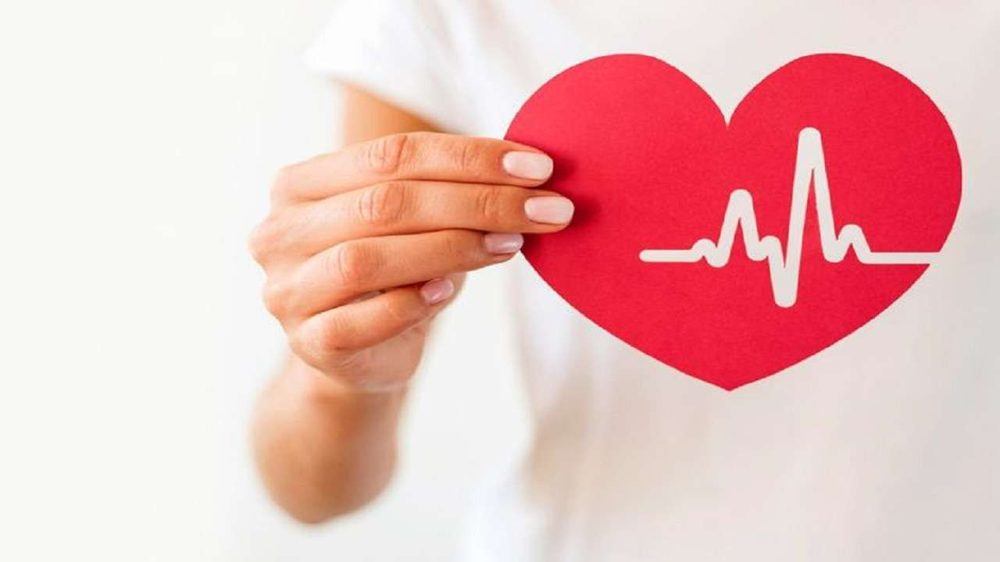Sumber lengkap disini